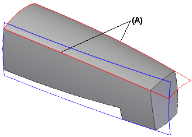
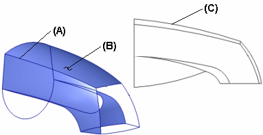

Surface construction advantages
For some types of parts, the surface modeling approach offers distinct advantages. For example, when modeling the faucet shown using revolved features, the shape of the edges (A) is the result of two intersecting surfaces. To change the shape of the edges, you must edit the surfaces. Often it is difficult to get the surface aesthetics you want.

With a surface modeling approach, you have much more control by using character curves. Character curves can be hard edges or soft edges. Hard edges are actual model edges (A), while soft edges are theoretical, view-dependent edges, such as when viewing a curved surface (B) from the side (C). Soft edges are also known as silhouette edges. Both types of edges are important for defining the flow, aesthetics, and overall shape of a surface.
